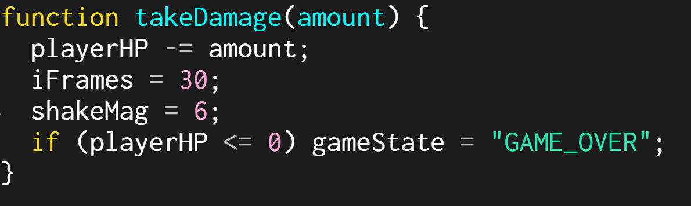
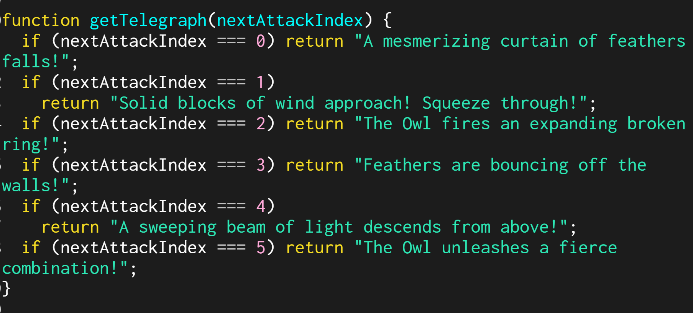

Description:
This project is a turn-based boss encounter inspired by "bullet-hell" RPGs such as Undertale and Deltarune. I created this to explore turn based combat games and boss projectile patterns. The goal was to create an Undertale style boss fight with a memorizable attack pattern in order to learn and develop my skills to create a full game in the future.
Instructions:
- Menu Navigation: Use the Arrow Keys or A/D to select between Fight, Item, and Mercy. Press ENTER to select.
- Attacking: Time your ENTER press when the moving bar is in the center of the box for a Critical Hit.
- Dodging: During the Enemy Turn, use the Arrow Keys (or WASD) to move your heart and avoid the projectiles.
- Items: Use "Item" to consume a pie and heal 10 HP when your health is low.
Learning Goal: Methods & Logic
Method with Parameters

The takeDamage(amount) method stores the instructions for reducing the player's health, triggering visual screen shake, and setting invincibility frames. It was useful to create this because it is called by many different types of projectiles (normal circles, walls, and lasers). The "amount" of damage is passed as a parameter.
Method with Return Value

The getTelegraph(nextAttackIndex) method stores a list of text strings and returns a specific message based on which attack is coming next. This was useful because it allows the game to "look ahead" at the turn counter and provide the player with a warning message in the UI, keeping the main handleEnemyTurn function clean and focused on physics.
LLM Assistance Attribution
I utilized AI assistance for generating code in order to speed up my design process. I then utilized this code by reading through and understanding all of it so that I may code it and use it in many forms and learn from it.